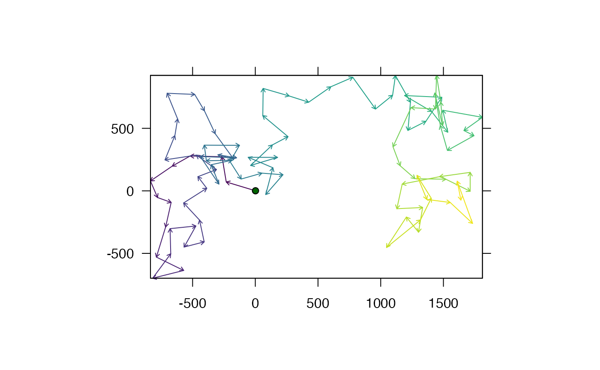
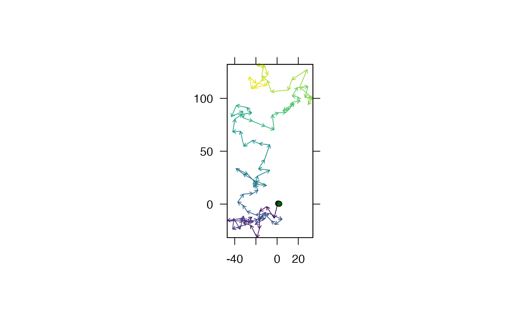
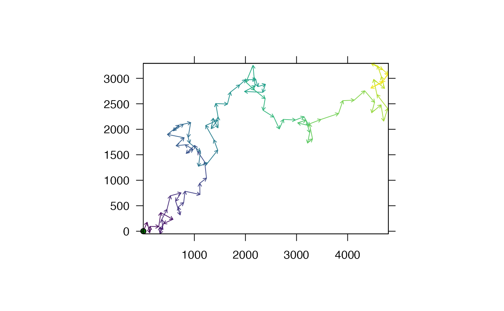

Simulate discrete-time movement paths from step lengths and turning angles
Source:R/sims.R
sim_path_sa.RdThis function simulates movement paths from step lengths and turning angles. To implement the function, the number of time steps (n) needs to be specified and, if applicable, the area within which movement should occur. For example, in marine environments, the inclusion of the sea as a spatial layer would restrict movement within the sea*. The starting location (p_1) can be provided or simulated. At each time step, user-defined functions are used to simulate step lengths and turning angles, which can depend previous values of those variables via a lag parameter, from which the next position is calculated. This implementation enables movement paths to be simulated under a variety of movement models, including random walks and correlated random walks, providing that they are conceptualised in terms of step lengths and turning angles. The function returns a list of outputs that includes the simulated path and, if requested, produces a plot of the simulated path.
sim_path_sa( n = 10, area = NULL, p_1 = NULL, sim_angle = sim_angles, sim_step = sim_steps, lag = 0L, plot = TRUE, add_points = list(pch = 21, bg = "darkgreen"), add_path = list(length = 0.05, col = viridis::viridis(n)), add_area = if (is.null(area)) NULL else list(), seed = NULL, verbose = TRUE, ... ) sim_steps(...) sim_angles(...)
Arguments
| n | An integer that defines the number of time steps in the simulation. |
|---|---|
| area | (optional) A |
| p_1 | (optional) A matrix with one row and two columns that defines the starting location (x, y). If |
| sim_angle | A function that is used to simulate turning angles. This must accept a single number that represents some previous turning angle (degrees), even if this is simply ignored (see |
| sim_step | A function that is used to simulate step lengths. This follows the same rules as for |
| lag | If |
| plot | A logical variable that defines whether or not to produce a plot of the area (if provided) and the simulated movement path. |
| add_area, add_points, add_path | (optional) Named lists of arguments that are used to customise the appearance of the area, points (the starting location) and the path on the map, passed to the |
| seed | (optional) An integer that defines the seed (for reproducible simulations: see |
| verbose | A logical variable that defines whether or not to print messages to the console that relay function progress. |
| ... | Additional arguments. For |
Value
The function returns a named list of arguments that defines the simulated path (`xy_mat', `angle_mat', `step_mat' and `path') and a named list of arguments that were used to generate the path (`args'). `xy_mat' is an n-row, two-column matrix that defines the simulated position (x, y) at each time step; `angle_mat' and `step_mat' are n-row, one-column matrices that define the simulated turning angle (degrees) and step length (in map units) at each time step; and `path' is a SpatialLines representation of the movement path.
Details
*Strictly speaking, only sequential positions are restricted to be within the allowed area. Yet since steps in the current implementation of the function are linear, the simulation of relatively large step lengths in an area with complex barriers to movement (e.g., convoluted coastlines), may lead to movement over inappropriate areas (e.g., over a peninsula) even through sequential positions are within the allowed area (e.g., either side of a peninsula). This problem can be mitigated by simulating time series for which sequential observations are closer in time (and thus for which step lengths are more constrained). For longer time series for which short time steps are undesirable, least-cost paths (e.g., see lcp_over_surface) may be implemented to ensure biologically meaningful movements in future (but this is more computationally demanding for rapid simulations).
This function requires the circular package.
See also
For movement simulations, see sim_path_* for the full list of functions currently implemented in flapper. For example, sim_path_ou_1 simulates a movement path based on past locations according to an Ornstein-Uhlenbeck process (which is not based on step lengths and turning angles). More broadly, sim_array, sim_path_* and sim_detections provide an integrated workflow for simulating acoustic arrays, movement paths in these areas and detections at receivers arising from movement.
Author
Edward Lavender
Examples
#### Example (1): Simulate movement path under default parameters # Simulate path path <- sim_path_sa()#> flapper::sim_path_sa() called (@ 2021-12-02 12:00:42)... #> ... Setting up simulation... #> ... Simulating movement path... #> | | | 0% | |======= | 10% | |============== | 20% | |===================== | 30% | |============================ | 40% | |=================================== | 50% | |========================================== | 60% | |================================================= | 70% | |======================================================== | 80% | |=============================================================== | 90% | |======================================================================| 100%... Plotting simulated path...#>#> ... flapper::sim_path_sa() call completed (@ 2021-12-02 12:00:42) after ~0 minutes.#> Length Class Mode #> xy_mat 20 -none- numeric #> angle_mat 10 -none- numeric #> step_mat 10 -none- numeric #> path 1 SpatialLines S4 #> args 11 -none- list#### Example (2): Change the number of time steps path <- sim_path_sa(n = 100)#> flapper::sim_path_sa() called (@ 2021-12-02 12:00:42)... #> ... Setting up simulation... #> ... Simulating movement path... #> | | | 0% | |= | 1% | |= | 2% | |== | 3% | |=== | 4% | |==== | 5% | |==== | 6% | |===== | 7% | |====== | 8% | |====== | 9% | |======= | 10% | |======== | 11% | |======== | 12% | |========= | 13% | |========== | 14% | |========== | 15% | |=========== | 16% | |============ | 17% | |============= | 18% | |============= | 19% | |============== | 20% | |=============== | 21% | |=============== | 22% | |================ | 23% | |================= | 24% | |================== | 25% | |================== | 26% | |=================== | 27% | |==================== | 28% | |==================== | 29% | |===================== | 30% | |====================== | 31% | |====================== | 32% | |======================= | 33% | |======================== | 34% | |======================== | 35% | |========================= | 36% | |========================== | 37% | |=========================== | 38% | |=========================== | 39% | |============================ | 40% | |============================= | 41% | |============================= | 42% | |============================== | 43% | |=============================== | 44% | |================================ | 45% | |================================ | 46% | |================================= | 47% | |================================== | 48% | |================================== | 49% | |=================================== | 50% | |==================================== | 51% | |==================================== | 52% | |===================================== | 53% | |====================================== | 54% | |====================================== | 55% | |======================================= | 56% | |======================================== | 57% | |========================================= | 58% | |========================================= | 59% | |========================================== | 60% | |=========================================== | 61% | |=========================================== | 62% | |============================================ | 63% | |============================================= | 64% | |============================================== | 65% | |============================================== | 66% | |=============================================== | 67% | |================================================ | 68% | |================================================ | 69% | |================================================= | 70% | |================================================== | 71% | |================================================== | 72% | |=================================================== | 73% | |==================================================== | 74% | |==================================================== | 75% | |===================================================== | 76% | |====================================================== | 77% | |======================================================= | 78% | |======================================================= | 79% | |======================================================== | 80% | |========================================================= | 81% | |========================================================= | 82% | |========================================================== | 83% | |=========================================================== | 84% | |============================================================ | 85% | |============================================================ | 86% | |============================================================= | 87% | |============================================================== | 88% | |============================================================== | 89% | |=============================================================== | 90% | |================================================================ | 91% | |================================================================ | 92% | |================================================================= | 93% | |================================================================== | 94% | |================================================================== | 95% | |=================================================================== | 96% | |==================================================================== | 97% | |===================================================================== | 98% | |===================================================================== | 99% | |======================================================================| 100%... Plotting simulated path...#>#> ... flapper::sim_path_sa() call completed (@ 2021-12-02 12:00:42) after ~0 minutes.#### Example (3): Change the characteristics of the study area # .. and define the starting location of the individual sea <- invert_poly(dat_coast) path <- sim_path_sa(n = 100, area = sea, p_1 = matrix(c(706529.1, 6262293), ncol = 2), add_area = list(x = sea, col = "skyblue"))#> flapper::sim_path_sa() called (@ 2021-12-02 12:00:42)... #> ... Setting up simulation... #> ... Simulating movement path... #> | | | 0% | |= | 1% | |= | 2% | |== | 3% | |=== | 4% | |==== | 5% | |==== | 6% | |===== | 7% | |====== | 8% | |====== | 9% | |======= | 10% | |======== | 11% | |======== | 12% | |========= | 13% | |========== | 14% | |========== | 15% | |=========== | 16% | |============ | 17% | |============= | 18% | |============= | 19% | |============== | 20% | |=============== | 21% | |=============== | 22% | |================ | 23% | |================= | 24% | |================== | 25% | |================== | 26% | |=================== | 27% | |==================== | 28% | |==================== | 29% | |===================== | 30% | |====================== | 31% | |====================== | 32% | |======================= | 33% | |======================== | 34% | |======================== | 35% | |========================= | 36% | |========================== | 37% | |=========================== | 38% | |=========================== | 39% | |============================ | 40% | |============================= | 41% | |============================= | 42% | |============================== | 43% | |=============================== | 44% | |================================ | 45% | |================================ | 46% | |================================= | 47% | |================================== | 48% | |================================== | 49% | |=================================== | 50% | |==================================== | 51% | |==================================== | 52% | |===================================== | 53% | |====================================== | 54% | |====================================== | 55% | |======================================= | 56% | |======================================== | 57% | |========================================= | 58% | |========================================= | 59% | |========================================== | 60% | |=========================================== | 61% | |=========================================== | 62% | |============================================ | 63% | |============================================= | 64% | |============================================== | 65% | |============================================== | 66% | |=============================================== | 67% | |================================================ | 68% | |================================================ | 69% | |================================================= | 70% | |================================================== | 71% | |================================================== | 72% | |=================================================== | 73% | |==================================================== | 74% | |==================================================== | 75% | |===================================================== | 76% | |====================================================== | 77% | |======================================================= | 78% | |======================================================= | 79% | |======================================================== | 80% | |========================================================= | 81% | |========================================================= | 82% | |========================================================== | 83% | |=========================================================== | 84% | |============================================================ | 85% | |============================================================ | 86% | |============================================================= | 87% | |============================================================== | 88% | |============================================================== | 89% | |=============================================================== | 90% | |================================================================ | 91% | |================================================================ | 92% | |================================================================= | 93% | |================================================================== | 94% | |================================================================== | 95% | |=================================================================== | 96% | |==================================================================== | 97% | |===================================================================== | 98% | |===================================================================== | 99% | |======================================================================| 100%... Plotting simulated path...#>#> ... flapper::sim_path_sa() call completed (@ 2021-12-02 12:00:42) after ~0 minutes.#### Example (4): Change the movement model(s) to use alternative distributions/parameters ## Step lengths # Define new function to simulate step lengths sim_step_lengths <- function(...) stats::rgamma(1, shape = 10, scale = 1) # Check outputs suitable values prettyGraphics::pretty_hist(replicate(n = 1000, expr = sim_step_lengths()))# Implement simulation path <- sim_path_sa(n = 100, sim_step = sim_step_lengths)#> flapper::sim_path_sa() called (@ 2021-12-02 12:00:42)... #> ... Setting up simulation... #> ... Simulating movement path... #> | | | 0% | |= | 1% | |= | 2% | |== | 3% | |=== | 4% | |==== | 5% | |==== | 6% | |===== | 7% | |====== | 8% | |====== | 9% | |======= | 10% | |======== | 11% | |======== | 12% | |========= | 13% | |========== | 14% | |========== | 15% | |=========== | 16% | |============ | 17% | |============= | 18% | |============= | 19% | |============== | 20% | |=============== | 21% | |=============== | 22% | |================ | 23% | |================= | 24% | |================== | 25% | |================== | 26% | |=================== | 27% | |==================== | 28% | |==================== | 29% | |===================== | 30% | |====================== | 31% | |====================== | 32% | |======================= | 33% | |======================== | 34% | |======================== | 35% | |========================= | 36% | |========================== | 37% | |=========================== | 38% | |=========================== | 39% | |============================ | 40% | |============================= | 41% | |============================= | 42% | |============================== | 43% | |=============================== | 44% | |================================ | 45% | |================================ | 46% | |================================= | 47% | |================================== | 48% | |================================== | 49% | |=================================== | 50% | |==================================== | 51% | |==================================== | 52% | |===================================== | 53% | |====================================== | 54% | |====================================== | 55% | |======================================= | 56% | |======================================== | 57% | |========================================= | 58% | |========================================= | 59% | |========================================== | 60% | |=========================================== | 61% | |=========================================== | 62% | |============================================ | 63% | |============================================= | 64% | |============================================== | 65% | |============================================== | 66% | |=============================================== | 67% | |================================================ | 68% | |================================================ | 69% | |================================================= | 70% | |================================================== | 71% | |================================================== | 72% | |=================================================== | 73% | |==================================================== | 74% | |==================================================== | 75% | |===================================================== | 76% | |====================================================== | 77% | |======================================================= | 78% | |======================================================= | 79% | |======================================================== | 80% | |========================================================= | 81% | |========================================================= | 82% | |========================================================== | 83% | |=========================================================== | 84% | |============================================================ | 85% | |============================================================ | 86% | |============================================================= | 87% | |============================================================== | 88% | |============================================================== | 89% | |=============================================================== | 90% | |================================================================ | 91% | |================================================================ | 92% | |================================================================= | 93% | |================================================================== | 94% | |================================================================== | 95% | |=================================================================== | 96% | |==================================================================== | 97% | |===================================================================== | 98% | |===================================================================== | 99% | |======================================================================| 100%... Plotting simulated path...#>#> ... flapper::sim_path_sa() call completed (@ 2021-12-02 12:00:42) after ~0 minutes.## Turning angles # E.g., Random walk: draw turning angle from von Mises distribution sim_angles_vmd <- function(...){ angle <- circular::rvonmises(n = 1, mu = circular::circular(0), kappa = 0, control.circular = list(units = "degrees")) return(as.numeric(angle)) } path <- sim_path_sa(n = 100, sim_angle = sim_angles_vmd)#> flapper::sim_path_sa() called (@ 2021-12-02 12:00:42)... #> ... Setting up simulation... #> ... Simulating movement path... #> | | | 0% | |= | 1% | |= | 2% | |== | 3% | |=== | 4% | |==== | 5% | |==== | 6% | |===== | 7% | |====== | 8% | |====== | 9% | |======= | 10% | |======== | 11% | |======== | 12% | |========= | 13% | |========== | 14% | |========== | 15% | |=========== | 16% | |============ | 17% | |============= | 18% | |============= | 19% | |============== | 20% | |=============== | 21% | |=============== | 22% | |================ | 23% | |================= | 24% | |================== | 25% | |================== | 26% | |=================== | 27% | |==================== | 28% | |==================== | 29% | |===================== | 30% | |====================== | 31% | |====================== | 32% | |======================= | 33% | |======================== | 34% | |======================== | 35% | |========================= | 36% | |========================== | 37% | |=========================== | 38% | |=========================== | 39% | |============================ | 40% | |============================= | 41% | |============================= | 42% | |============================== | 43% | |=============================== | 44% | |================================ | 45% | |================================ | 46% | |================================= | 47% | |================================== | 48% | |================================== | 49% | |=================================== | 50% | |==================================== | 51% | |==================================== | 52% | |===================================== | 53% | |====================================== | 54% | |====================================== | 55% | |======================================= | 56% | |======================================== | 57% | |========================================= | 58% | |========================================= | 59% | |========================================== | 60% | |=========================================== | 61% | |=========================================== | 62% | |============================================ | 63% | |============================================= | 64% | |============================================== | 65% | |============================================== | 66% | |=============================================== | 67% | |================================================ | 68% | |================================================ | 69% | |================================================= | 70% | |================================================== | 71% | |================================================== | 72% | |=================================================== | 73% | |==================================================== | 74% | |==================================================== | 75% | |===================================================== | 76% | |====================================================== | 77% | |======================================================= | 78% | |======================================================= | 79% | |======================================================== | 80% | |========================================================= | 81% | |========================================================= | 82% | |========================================================== | 83% | |=========================================================== | 84% | |============================================================ | 85% | |============================================================ | 86% | |============================================================= | 87% | |============================================================== | 88% | |============================================================== | 89% | |=============================================================== | 90% | |================================================================ | 91% | |================================================================ | 92% | |================================================================= | 93% | |================================================================== | 94% | |================================================================== | 95% | |=================================================================== | 96% | |==================================================================== | 97% | |===================================================================== | 98% | |===================================================================== | 99% | |======================================================================| 100%... Plotting simulated path...#>#> ... flapper::sim_path_sa() call completed (@ 2021-12-02 12:00:42) after ~0 minutes.# E.g., Correlated random walk: draw turning angle from wrapped normal distribution sim_angles_rwn <- function(...){ angle <- circular::rwrappednormal(n = 1, mu = circular::circular(0), rho = 0.999, sd = 0, control.circular = list(units = "degrees")) return(as.numeric(angle)) } path <- sim_path_sa(n = 100, sim_angle = sim_angles_rwn)#> flapper::sim_path_sa() called (@ 2021-12-02 12:00:42)... #> ... Setting up simulation... #> ... Simulating movement path... #> | | | 0% | |= | 1% | |= | 2% | |== | 3% | |=== | 4% | |==== | 5% | |==== | 6% | |===== | 7% | |====== | 8% | |====== | 9% | |======= | 10% | |======== | 11% | |======== | 12% | |========= | 13% | |========== | 14% | |========== | 15% | |=========== | 16% | |============ | 17% | |============= | 18% | |============= | 19% | |============== | 20% | |=============== | 21% | |=============== | 22% | |================ | 23% | |================= | 24% | |================== | 25% | |================== | 26% | |=================== | 27% | |==================== | 28% | |==================== | 29% | |===================== | 30% | |====================== | 31% | |====================== | 32% | |======================= | 33% | |======================== | 34% | |======================== | 35% | |========================= | 36% | |========================== | 37% | |=========================== | 38% | |=========================== | 39% | |============================ | 40% | |============================= | 41% | |============================= | 42% | |============================== | 43% | |=============================== | 44% | |================================ | 45% | |================================ | 46% | |================================= | 47% | |================================== | 48% | |================================== | 49% | |=================================== | 50% | |==================================== | 51% | |==================================== | 52% | |===================================== | 53% | |====================================== | 54% | |====================================== | 55% | |======================================= | 56% | |======================================== | 57% | |========================================= | 58% | |========================================= | 59% | |========================================== | 60% | |=========================================== | 61% | |=========================================== | 62% | |============================================ | 63% | |============================================= | 64% | |============================================== | 65% | |============================================== | 66% | |=============================================== | 67% | |================================================ | 68% | |================================================ | 69% | |================================================= | 70% | |================================================== | 71% | |================================================== | 72% | |=================================================== | 73% | |==================================================== | 74% | |==================================================== | 75% | |===================================================== | 76% | |====================================================== | 77% | |======================================================= | 78% | |======================================================= | 79% | |======================================================== | 80% | |========================================================= | 81% | |========================================================= | 82% | |========================================================== | 83% | |=========================================================== | 84% | |============================================================ | 85% | |============================================================ | 86% | |============================================================= | 87% | |============================================================== | 88% | |============================================================== | 89% | |=============================================================== | 90% | |================================================================ | 91% | |================================================================ | 92% | |================================================================= | 93% | |================================================================== | 94% | |================================================================== | 95% | |=================================================================== | 96% | |==================================================================== | 97% | |===================================================================== | 98% | |===================================================================== | 99% | |======================================================================| 100%... Plotting simulated path...#>#> ... flapper::sim_path_sa() call completed (@ 2021-12-02 12:00:42) after ~0 minutes.#### Example (5) Change the movement models to depend on some lagged value # ... of the variable in question # Define a sim_angle function that depends on some previous angle # While the time step is less than the lag, the function needs to be # ... able to handle missing angles and return sensible values in these # ... cases e.g., via an 'is.null' structure: sim_angles_wrn_with_lag <- function(angle = NULL,...){ if(is.null(angle)) { cat("\n... ... method (1) activated...\n") # useful check angle_out <- circular::circular(0) } else{ angle_out <- circular::rwrappednormal(n = 1, mu = circular::circular(angle, units = "degrees"), rho = 0.9, sd = 0.1, control.circular = list(units = "degrees")) } return(as.numeric(angle_out)) } # Check function sim_angles_wrn_with_lag(NULL)#> #> ... ... method (1) activated...#> [1] 0sim_angles_wrn_with_lag(1)#> [1] 341.3967# Implement algorithm path <- sim_path_sa(sim_angle = sim_angles_wrn_with_lag, lag = 1)#> flapper::sim_path_sa() called (@ 2021-12-02 12:00:42)... #> ... Setting up simulation... #> ... Simulating movement path... #> | | | 0% #> ... ... method (1) activated... #> | |======== | 11% #> ... ... method (1) activated... #> | |================ | 22% | |======================= | 33% | |=============================== | 44% | |======================================= | 56% | |=============================================== | 67% | |====================================================== | 78% | |============================================================== | 89% | |======================================================================| 100%... Plotting simulated path...#>#> Warning: zero-length arrow is of indeterminate angle and so skipped#> ... flapper::sim_path_sa() call completed (@ 2021-12-02 12:00:42) after ~0 minutes.path <- sim_path_sa(sim_angle = sim_angles_wrn_with_lag, lag = 2)#> flapper::sim_path_sa() called (@ 2021-12-02 12:00:42)... #> ... Setting up simulation... #> ... Simulating movement path... #> | | | 0% #> ... ... method (1) activated... #> | |========= | 12% #> ... ... method (1) activated... #> | |================== | 25% #> ... ... method (1) activated... #> | |========================== | 38% | |=================================== | 50% | |============================================ | 62% | |==================================================== | 75% | |============================================================= | 88% | |======================================================================| 100%... Plotting simulated path...#>#> Warning: zero-length arrow is of indeterminate angle and so skipped#> Warning: zero-length arrow is of indeterminate angle and so skipped#> ... flapper::sim_path_sa() call completed (@ 2021-12-02 12:00:42) after ~0 minutes.